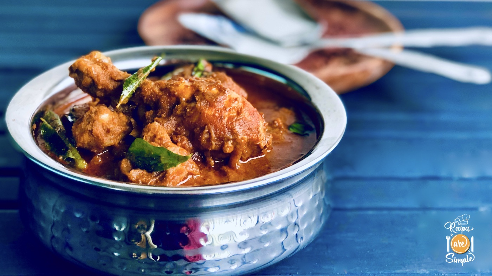

Varutharacha Chicken Curry

Description
This is a delicious recipe about a curry from Kerala, a southern state in India.
This is a recipe that has been passed down across generations and it includes various native ingredients such as coconut and spices.
The dish goes well with Indian bread (naan/chapathi) as well as rice.
Key Ingredients
- 1 kg chicken
- 4 onions
- 1 inch piece of ginger
- 10 garlic cloves
- 4 green chillies
- Curry leaves
- 1 Tomato
- Salt as required
- 4 green chillies
Ingredients for Gravy
- 1/2 coconut
- 1 tbsp coriander seeds
- 4 dried chillies
- 1/2 tsp fennel seeds
- 2 cardamom pods
- 2 cloves
- 1 piece cinnamon
- 1 tsp pepper corns
- 1 inch piece of ginger
- 10 garlic cloves
- 1/2 tsp tumeric powder
Preparation Steps
- Dry roast the grated coconut with coriander seeds, dried chillies, fennel seeds,
cardamom, cloves, cinnamon, pepper corns, ginger and garlic on a low flame
- Turn off the flame when the coconut turns dark brown in colour
- Add the turmeric powder when the mixture cools down
- Grind the mixture without adding water
- Meanwhile, heat 1 tbsp coconut oil in a pan
- Sauté sliced onion, finely chopped ginger and garlic, green chillies and curry leaves
- Add in the ground masala when the onions are sautéed well and oil begins to separate
- Mix everything well
- Now add the chicken and salt as required
- Give everything a good mix
- Pour ¾ cup hot water
- Simmer for 15 minutes with the lid on
- Finally add the tomato slices and cook for another 5 minutes
Your delicious Varutharacha chicken curry is now ready to be enjoyed!